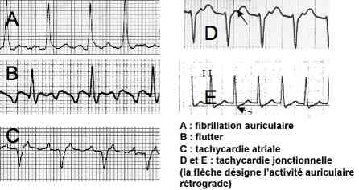

Bienvenue Sur Medical Education
Tachycardies à complexes fins
Spécialité : cardiologie /
Points importants
- Les tachycardies à QRS fins peuvent être très rapides mais sont le plus souvent bien tolérées
- L'origine de la tachycardie à QRS fins ne peut être que supraventriculaire : soit auriculaire (ACFA, flutter auriculaire, tachycardie auriculaire), soit impliquant le noeud auriculo-ventriculaire (NAV) et éventuellement une voie accessoire (tachycardie dite jonctionnelle)
- Un rythme irrégulier exclut en principe une tachycardie jonctionnelle
- Lorsque la distinction est difficile entre tachycardie jonctionnelle et tachycardie des oreillettes, l'utilisation de manoeuvres ou drogues bloquant ou ralentissant la conduction dans le NAV permet le diagnostic (manoeuvres vagales, ATP, bêtabloquants ou inhibiteurs calciques à demi-vie brève), en démasquant l'activité auriculaire (tachycardie auriculaire) ou en arrêtant une tachycardie jonctionnelle
- Sur certaines cardiopathies (CMH, RAC, HVG des hypertendus, CMD à FEVG très altérée), surveillance accrue car risque de décompensation cardiaque assez rapide
- En cas de bloc de branche, organique ou fréquence dépendant, de prise d'anti-arythmiques de classe I (élargissant le QRS à fréquence élevée) ou de WPW, un trouble du rythme supraventriculaire peut s'associer à un QRS large, l'enjeu devient alors de distinguer ces aspects de ceux d'une TV (question spécifique)
Présentation clinique / CIMU
SIGNES FONCTIONNELS
- Palpitations (parfois absentes)
- Asthénie, polyurie, sueurs
- Dyspnée d'effort et ou de repos
- Possible lipothymie ou syncope initiale
- Possible angor fonctionnel
CONTEXTE
Troubles du rythme auriculaires (ACFA, flutter, TSA)
- Maladie du sujet âgé le plus souvent
- HTA ++
-
Maladies fibrosantes de l'oreillette :
- cardiomyopathies (toutes) en particulier, HVG post HTA, valvulopathies, cardiopathies hypokinétiques, CMH
-
facteurs déclenchants :
- alcool
- hypokaliémie
- fièvre, infection pulmonaire
- EP
- anémie
- hyperthyroïdie
- intoxication digitalique
- bêta 2 mimétiques
- péricardite
- syndrome coronarien aigu
- stress des ACFA catécholergiques
- circonstances vagales des ACFA vagales
-
Forme particulière de l'ACFA focale paroxystique du sujet jeune :
- épisodes très fréquents sans facteur déclenchant, de réduction spontanée sur coeur sain.
Tachycardies jonctionnelles
- Sujet jeune
- Début des crises dans l'enfance ou adolescence, parfois âge mûr
- Accès de quelques minutes à quelques heures connus du patient ou autotraités par manoeuvres vagales
- Déclenchement à l'effort et/ou repos selon les patients
- Antéflexion ou éternuement circonstances de déclenchement très évocatrices
- Début brutal +++ "sur un battement"
EXAMEN CLINIQUE
- Doit apprécier le retentissement de la tachycardie
Hémodynamique
- Le plus souvent bien tolérée : asthénie, palpitations, gêne thoracique, dyspnée d'effort
- PA parfois difficile à prendre (bradycardie et/ou irrégularité)
- Etat de choc, HoTA, marbrures, vasoconstriction périphérique
- Insuffisance cardiaque gauche et/ou droite : orthopnée, crépitants bilatéraux auscultatoires, turgescence jugulaire spontanée
Neurologique
- Etat de conscience, agitation, obnubilation, oligurie, sueurs en faveur d'un bas débit cardiaque sur cardiopathie sous-jacente
- Tableau neurologique (signes focaux) au premier plan révélateur d'une arythmie auriculaire
Arguments étiologiques
-
Recherche des facteurs déclenchants :
- en particulier prise d'hypokaliémiants, arguments cliniques pour EP ou hyperthyroïdie, anémie,...
-
Recherche une cardiopathie :
- souffle de valvulopathie
- frottement péricardique
EXAMENS PARACLINIQUES SIMPLES
SpO2 : indicateur d'un éventuel subOAP débutant
ECG : +++ affirme le diagnostic
 _392 Photo ECG : comparatifs
-
Tachycardie auriculaire :
- tachycardie à QRS fins le plus souvent, irrégulière (ACFA ou flutter/TSA à conduction variable aux ventricules, ralentis par un médicament anti-arythmique) ou régulière (flutter, tachycardie atriale)
-
avec activité auriculaire de trois types :
- fibrillation auriculaire, activité auriculaire anarchique rapide (400 à 600 bpm) avec trémulation anarchique de la ligne de base. La conduction aux ventricules est limitée par le NAV et les ventricules sont irréguliers
- flutter auriculaire : activité régulière en toit d'usine surtout visible en D2 D3 VF sans retour à la ligne isoélectrique. Les auriculogrammes ont une fréquence de 300 bpm et sont souvent conduits en 2/1 aux ventricules, d'où une tachycardie fixe à 150 bpm en l'absence de ralentisseurs
- tachycardie atriale : activité auriculaire rapide ressemblant à une onde P mais de morphologie différente (160 à 240) avec retour à la ligne isoélectrique. La conduction aux ventricules se fait souvent en 2/1 mais peut se faire en 1/1 (ex: 180 bpm)
-
Tachycardie jonctionnelle :
- tachycardie à QRS fins, souvent au-delà de 200 bpm, avec activité auriculaire rétrograde juste à la fin ou un peu après le QRS, sous forme d'une petite encoche négative de D2 D3 aVF
Signes paracliniques
BIOLOGIQUES
Retentissement de la tachycardie
-
Fonction rénale + bilan hépatique :
- insuffisance rénale et cytolyse sont en faveur d'un bas débit cardiaque a minima
Etiologies
- Kaliémie
- Troponine en cas de suspicion de SCA clinique et électrique
- Bilan inflammatoire : CRP, NFS, fibrinogène
- TSH
- D-dimères si point d'appel clinique
IMAGERIE
Radiographie thoracique
- Cardiomégalie et surtout surcharge vasculaire en faveur d'un subOAP en cas d'arythmie auriculaire
- Eventuel foyer de pneumopathie
Echographie trans-thoracique
- Fera partie du bilan mais n'a pas d'indication urgente
Diagnostic étiologique
Cardiopathies
-
Toutes les atteintes cardiaques gauches et/ou droites peuvent entraîner une tachycardie auriculaire par stretch atrial (dilatation et altération du réseau électrique de l'oreillette gauche en réponse à une surcharge volumique ou de pression des ventricules)
- péricardites, en phase aigue
- myocardiopathies en particulier hypokinétiques dilatées (idiopathiques, ischémiques)
- valvulopathies en particulier mitrales
- HTA
Age
- La fréquence des TDRA augmente significativement avec l'âge (cardiopathie dite diastolique du sujet âgé, trouble de la relaxation du VG qui impose une difficulté à l'oreillette gauche pour le remplissage)
- Mais TDRA possibles chez sujets jeunes et sur un mode plutôt paroxystique (rechercher un facteur déclenchant ++)
Causes aiguës réversibles
- Alcool
- Hypokaliémie
- Fièvre, infection pulmonaire
- EP
- Hyperthyroïdie
- Intoxication digitalique
- Bêta-2-mimétiques, catécholamines
- Péricardite
- Syndrome coronarien aigu
Diagnostic différentiel
En cas de tachycardie régulière à complexes fins
- Diagnostic parfois difficile entre tachycardie auriculaire et jonctionnelle
En cas de tachycardie à complexes larges régulière
- Tachycardie ventriculaire
- Tachycardie des oreillettes avec bloc de branche
- Conduction en 1/1 aux ventricules sous anti-arythmiques élargissant le QRS
Traitement
TRAITEMENT PREHOSPITALIER / INTRAHOSPITALIER
Stabilisation initiale
- Scope surtout si tachycardie rapide (> 160/min)
- Perfusion par large voie avec soluté G5% (éviter le NaCl 0,9%, risque d'aggravation ou d'apparition de subOAP)
Suivi du traitement
-
Dépend de la tolérance :
- très exceptionnellement dans le cas d'une tachycardie à QRS fins, cardioversion sous anesthésie générale ou sans anesthésie si mauvaise tolérance (patient inconscient ou en état de choc), dans le cas d'une tachycardie auriculaire sur cardiopathie évoluée. Choc antéropostérieur biphasique si disponible
- éventuellement précédé d'amiodarone IVSE 2 amp de 150 mg en 30 minutes en cas de nécessité de réduction du TDR pour mauvaise tolérance
-
En cas de tachycardie auriculaire (ACFA, flutter, tachycardie auriculaire) :
- dans tous les autres cas d'arythmie auriculaire, ne pas essayer de réduire en aigu (ancienneté > 48h est une contre-indication à la réduction d'une arythmie auriculaire sauf si ETO préalable vérifiant absence de thrombus OG)
- anticoagulation par HNF 4 à 500 UI/kg/24h en l'absence de contre-indication
-
ralentissement du TDRA :
- digoxine ½ à 1 amp IVD toutes les 8 heures si FC > 120 bpm, en normokaliémie et en l'absence d'insuffisance rénale sévère
- bêtabloquant per os en l'absence de signe de décompensation cardiaque, et en l'absence connue de détérioration de la FEVG ; exemple : Bisoprolol® 2,5 à 5 mg à réévaluer par auscultation et ECG dans la journée
- les inhibiteurs calciques type diltiazem, vérapamil peuvent être employés avec les mêmes précautions que pour les bêtabloquants
- traitement du retentissement :
-
diurétiques IVD type furosémide à renouveler en fonction de l'évolution clinique d'une insuffisance cardiaque. La résolution de l'insuffisance cardiaque gauche peut être l'élément le plus efficace pour ralentir le TDRA, car tachycardisante par elle-même
- compensation potassique en cas de diurétiques: au minimum 2 gr KCl /24h en perfusion puis substitution per os (Diffu K 600 mg 2 gélules par 500 mL de diurèse) ; l'hypokaliémie peut entraîner la persistance du trouble du rythme
-
En cas de tachycardie jonctionnelle :
- réduction par manoeuvres vagales (compression sinocarotidienne en l'absence de souffle carotidien, manoeuvre de Valsalva, réflexe nauséeux)
- ATP en l'absence de contre-indication (asthme, BPCO sévère); surélever les jambes si crainte de la pause à la réduction...
- si contre-indication de l'ATP : inhibiteurs calciques IV type vérapamil ou diltiazem
- les bêtabloquants peuvent être efficaces également si refus de l'ATP (aténolol, esmolol)
- penser à enregistrer la réduction par un ECG tracé long (visualisation d'un faisceau de Kent)
MEDICAMENTS
Adénosine triphosphate
- 10 à 20 mg en IVD « flash »
- Demi-vie inférieure à 10 secondes
- Contre-indications : asthme, BPCO sévère, allergie, état hémodynamique très précaire. Non contre-indiqué pendant la grossesse
Digoxine
- Ampoules à 500 µg
- ½ à une ampoule en IV toutes les 12 heures telle que la FC soit = 110 bpm
- A injecter lentement
- Délai d'action rapide (30 min)
- Demi-vie 36 heures
- Posologie réduite en cas d'insuffisance rénale
- Corriger une hypokaliémie au préalable
Bêtabloquants
- Esmolol 500 µg/kg/min en 1 min suivi d'une perfusion de 50 µg/kg/min d'entretien sur 4 min
- Séquence à renouveler éventuellement au bout de 5 min avec une dose d'entretien plus importante (augmentée par paliers de 50 µg/kg/min sans dépasser 200 µg/kg/min)
- Disparition des effets secondaires en 30 min
- Contre-indications : asthme, BPCO, insuffisance cardiaque décompensée, troubles de conductions auriculo-ventriculaires de haut degré
- Ne pas faire passer avec HCO3Na
- A diluer tel que concentration de 10 mg/mL à respecter
Aténolol
- Bêtabloquant
- ½ à 1 amp de 5 mg en IVD lente
- Effet immédiat en IV
- Demi-vie 9 heures
- Mêmes contre-indications que l'esmolol
Vérapamil
- Inhibiteur calcique
- 1 ampoule de 2 mL soit 5 mg sur 3 min en IV, éventuellement à renouveler une fois au bout de 10 min
- Contre-indications : insuffisance cardiaque systolique, troubles de conduction de haut degré
- ½ vie 25 min et 5 heures
Tildiem injectable
- Inhibiteur calcique
- Flacons à 100 mg poudre pour solution injectable IV : 0,25 à 0,3 mg/kg en IVD sur 2 min, éventuellement à renouveler
- Contre-indications : insuffisance cardiaque systolique, troubles de conduction de haut degré
- ½ vie de distribution 25 min, élimination 3 heures
Diurétiques de l'anse
- Furosémide 60 à 80 mg IVD à réinjecter selon la réponse (diurèse dans l'heure qui suit)
- Associer une compensation potassique
Amiodarone IVSE
- 2 amp à 150 mg sur 30 min sur une voie de bon calibre
- A diluer dans du sérum glucosé isotonique
Surveillance
CLINIQUE
- Scope si tachycardie mal tolérée ou > 160/min
- ECG répétés en cas d'administration de ralentisseurs
- Constantes (PA, SpO2, FC)/h
- Recherche de signes d'insuffisance cardiaque (OAP) si persistance du TDR
PARACLINIQUE
- Kaliémie à compenser si diurétiques
- ECG : persistance de l'arythmie auriculaire, ralentissement sous drogues
Devenir / orientation
EN PREHOSPITALIER
Selon la tolérance
- Orientation vers un service spécialisé de cardiologie ou service disposant d'avis cardiologique si cardiopathie sous-jacente connue à risque (CMH, CMD sévère) ou retentissement (OAP, collapsus...)
- Orientation possible vers les Urgences puis un service de médecine traditionnelle en l'absence de retentissement hémodynamique et biologique, si tachycardie peu rapide
EN INTRAHOSPITALIER
Tachycardie jonctionnelle
- Sortie possible avec rendez-vous de consultation en cardiologie
- En cas de récidive précoce ou de plusieurs épisodes en 24 heures, hospitalisation courte préférable
Arythmie auriculaire
-
Mauvaise tolérance (OAP, perte de connaissance initiale, collapsus, cardioversion nécessaire)
- USIC
-
Tolérance correcte et persistance du TDR :
- service de cardiologie pour bilan étiologique et traitement ralentisseur, prise en charge ultérieure (réduction)
-
Tolérance correcte et TDR de réduction spontanée :
- avis cardiologique pour maintien d'une anticoagulation et prescription d'un ralentisseur ou anti-arythmique, éventuelle gestion ambulatoire
Bibliographie
- Aide mémoire rythmologie. R Slama, G Motté, A. Leenhardt, C Sebag. Editions Médecine Sciences - Flammarion
- L'Electrocardiogramme. Jean Gay, M. Desnos, patrice Benoit. Editions Frison-Roche.
- Fuster V et al. ACC/AHA/ESC 2006 guidelines for the management of patients with atrial fibrillation: full text. Europace (2006) 8, 651-745.
- Blomström-Lundqvist C et al. ACC/AHA/ESC guidelines for the management of patients with supraventricular arrhythmias. Executive surmmary. European Heart Journal 2003, 24- 1857-1897
Auteur(s) : Anne MESSALI